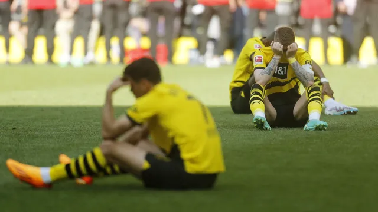

Bundesliga
Borussia empata em casa e deixa título alemão escapar para o Bayern
Time aurinegro, que dependia apenas de si, vê bávaros levarem 11º troféu seguido após tropeço, com pênalti perdido por Haller. Dortmund chega a ter esperança com gol do Colônia, mas se frustra no fim.